Code
# 1. Save data from The Pudding Github site
#| echo: false
pudding <- read_csv(
"https://raw.githubusercontent.com/the-pudding/data/master/dearabby/raw_da_qs.csv"
)People seeking advice
Daniel Martínez Scavino
Seeking advice from friends is not always easy. Not everyone is a good confidant and sometimes our secrets are too embarrasing or too delicate to reveal outloud. For centuries, the truthwordy confidants of people with power were individuals bound by a vow of secrecy, priest for example. With the development of the printed press and later the radio, people found a chance to anonimously shared their stories and ask for advice.
In Spain the most famous radio advice show, El Consultorio de Elena Francis, run continuously from 1947 to 1984. For nearly four decades, millions of Spanish women tuned in or wrote letters to Señora Francis seeking guidance on personal issues, relationship struggles, family drama, and domestic problems. Interestingly, the show became the moral watchdog of the Franco regime. The responses broadcasted reflected the conservative, patriarchal, and Catholic values endorsed by the Francoist regime. Advice frequently encouraged women to endure infidelity, domestic hardship, or mistreatment, emphasizing patience, devotion, and submission to preserve the family structure.
The Señora Francis of the USA is Dear Abby, a column that has been runnng countiously since 1956 and has been sindycated in more than 1,200 newspapers. The letters sent to Dear Abby have been compilated by The Pudding, an award-winning digital publication that creates visual essays and interactive data visualizations to explain culturally debated topics and complex ideas.
In the The Putting article, 30 Years of American Anxietis, authors Ilia Blinderman, Caitlyn Ralph, and Russell Samora (with illustrations by Thoka Maer) identify the most debated topics by Dear Abby readers: sex, religion, and LGBTQ issues. The articule includes many of the letters that are worth reading!
Here, I do my own analysis of 20,034 Dear Abby letters from 1985 to 2017 from an archive which can be found in the The Pudding Github site.
I am using word clouds to attempt to reveal some of the most prevalent topics of the letters. No filters were applied to the first cloud below which includes 20,034 letters written from 1985 to 2017. Thus, words like abby appear, as expected, with high frequency. For the clouds for specific years, I have removed a list of words including Abby, dear, advice, letter, and letters.
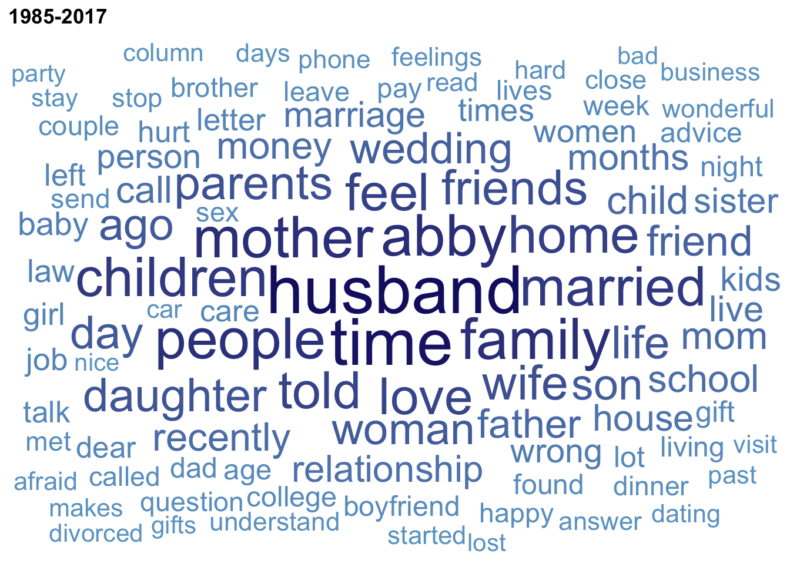
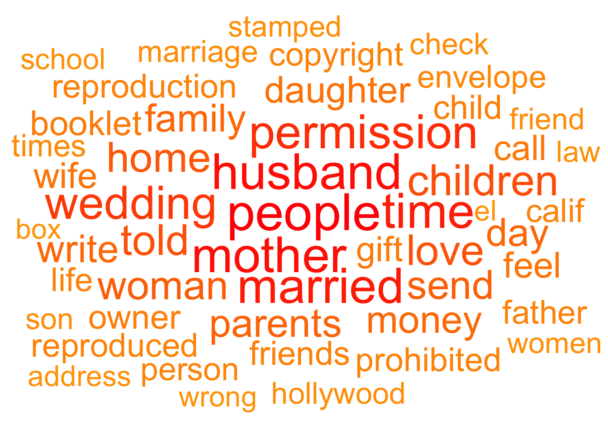
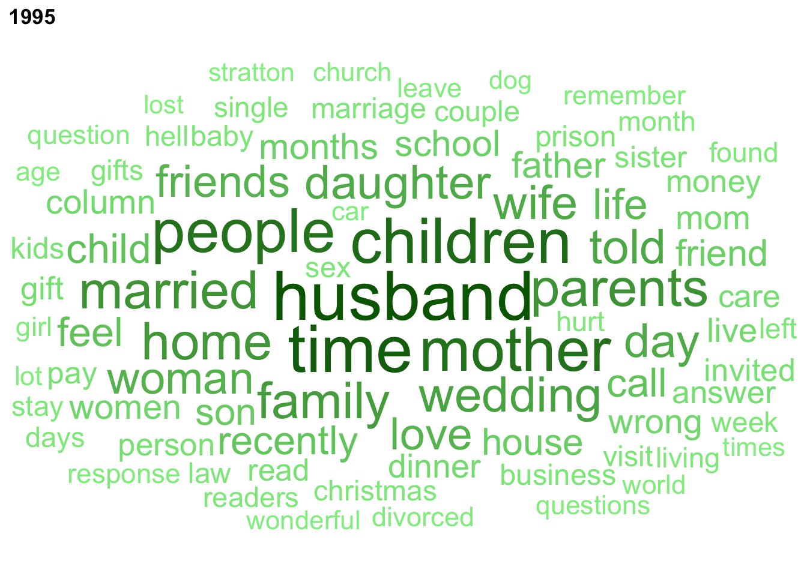
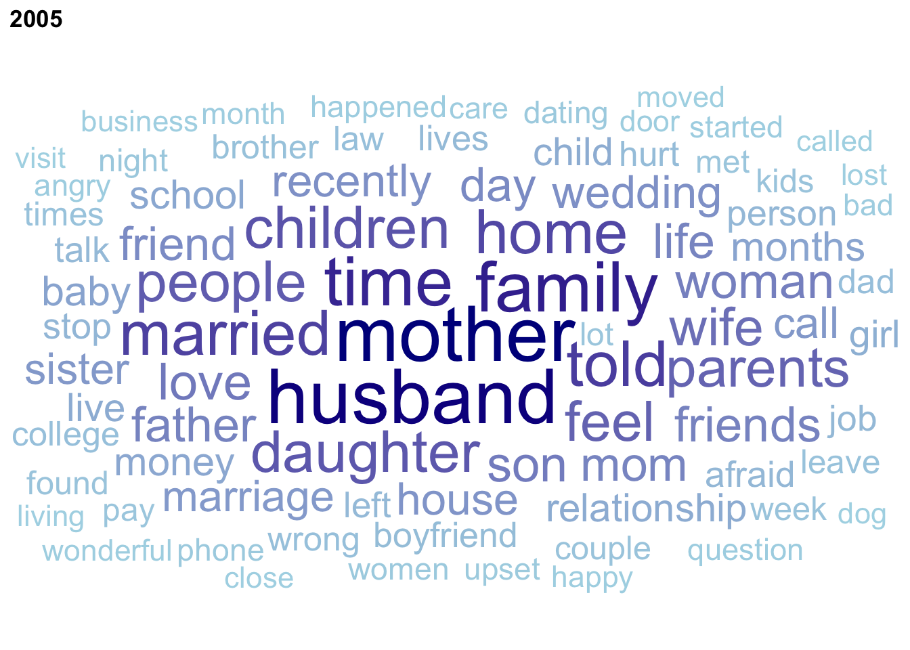
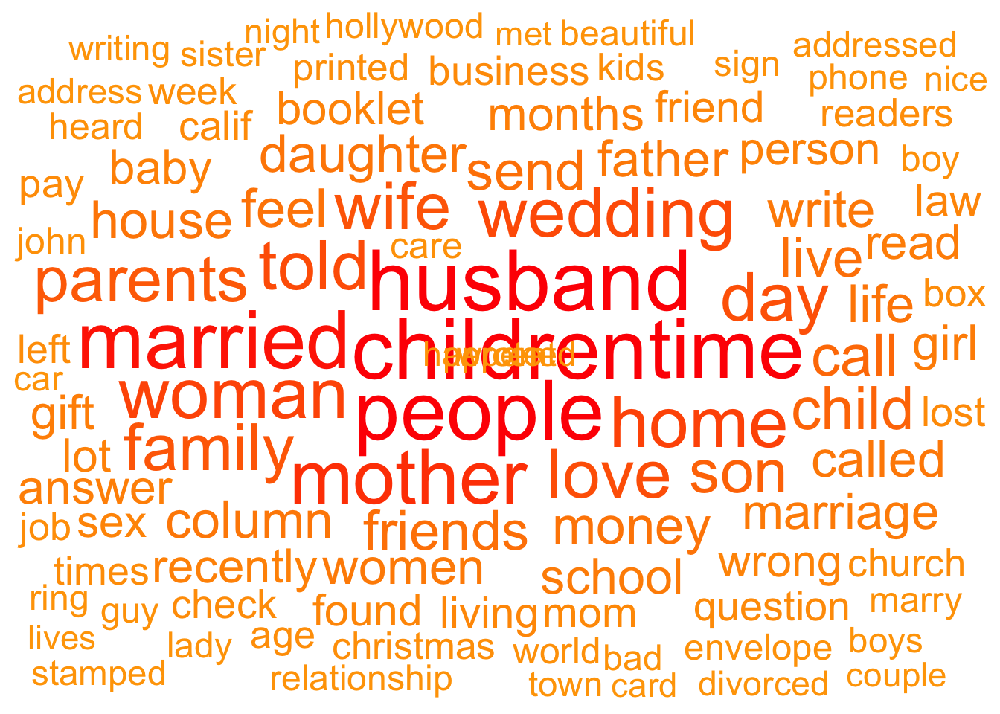
The word “husband” is consistenly one of the most frequently used in these letters throughout several decades. Is that because women are the main writters to Abby? In order to investigate this a bit further, I have selected letters that include the words “my husband” and “my wife” hoping that this indentifies the writer. This is obviously not a perfect strategy. The word clouds below come from those letters. Assuming that the writers are talking about their partners, what can the word frequencies tell us about the letters? Are the themes different? Have they changed through time?
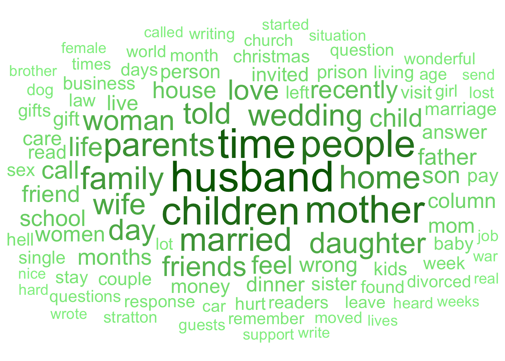
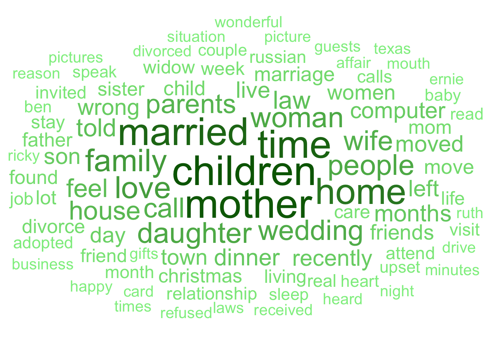
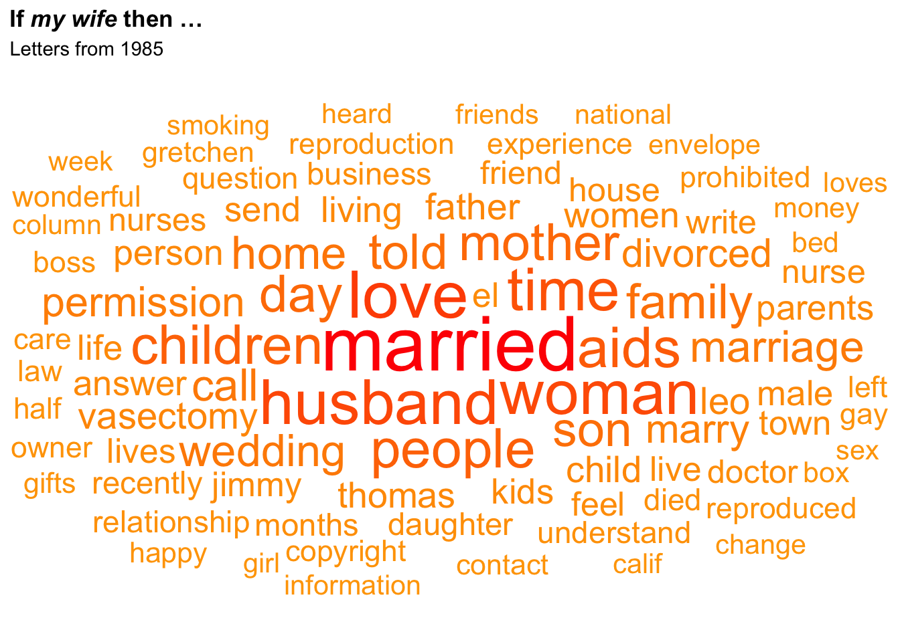
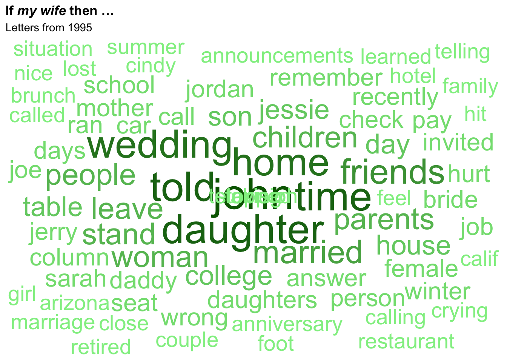
The plots below track the change through the years in the frequency of the most used words in the letters. The frequencies were calcuated by selecting the top 100 most frequent words for each individual year.
# Generate table with the 100 more frequent words by year
# It evaluates every year independently and pulls out the top 100 most frequent words for each individual year.
words_by_year <- pudding %>%
group_by(year) %>%
select(question_only) %>%
drop_na(question_only) %>%
unnest_tokens(word, question_only) %>%
# Remove expected/un-informative words
anti_join(stop_words, by = "word") %>%
anti_join(custom_stops, by = "word") %>% # Removes YOUR custom words
# Filter out numbers or non-alphabetical tokens if desired
filter(str_detect(word, "^[a-z]+$")) %>%
count(word, sort = TRUE) %>%
slice_max(n, n = 100)# 1. Identify the top 10 words based on word_total
top_10_words <- words_by_year_prop_w %>%
distinct(word, word_total) %>%
slice_max(word_total, n = 10) %>%
pull(word)
# 2. Filter your dataset for only those top 10 words and plot
words_by_year_prop_w %>%
filter(word %in% top_10_words) %>%
ggplot(aes(x = year, y = prop, color = word)) +
geom_point(alpha = 0.8, size = 2) +
geom_line(alpha = 0.5) +
labs(
title = "percentage of the 10 top words over time",
x = "Year",
y = "",
color = "Word"
) +
theme_minimal()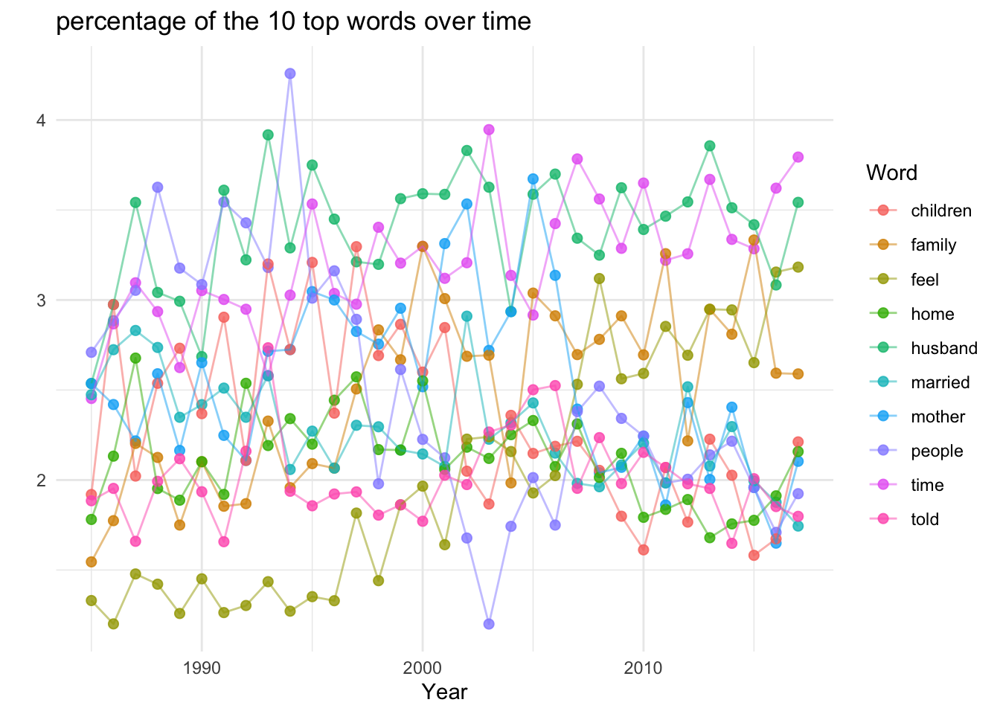
library(tidyverse)
# 1. Identify the top words (can change number below)
top_words <- words_by_year_prop_w %>%
distinct(word, word_total) %>%
slice_max(word_total, n = 5) %>%
pull(word)
# 2. Create the stacked facet plot
words_by_year_prop_w %>%
filter(word %in% top_words) %>%
ggplot(aes(x = year, y = prop, color = word)) +
geom_point(alpha = 0.8, size = 2) +
geom_line(alpha = 0.5) +
facet_wrap(~ word, ncol = 1, scales = "fixed") + # Uses the same scale for all panels
scale_y_continuous(
limits = c(0, 4), # Forces the axis to run from 0 to 4
breaks = c(0, 4), # Places tick marks at both 0 and 4
labels = c("0", "4") # Displays labels for both 0 and 4
) +
labs(
title = "percentage of the five top words over time",
x = "Year",
y = "",
color = "Word"
) +
theme_minimal() +
theme(legend.position = "none") # Optional: hides legend since each panel is already labeled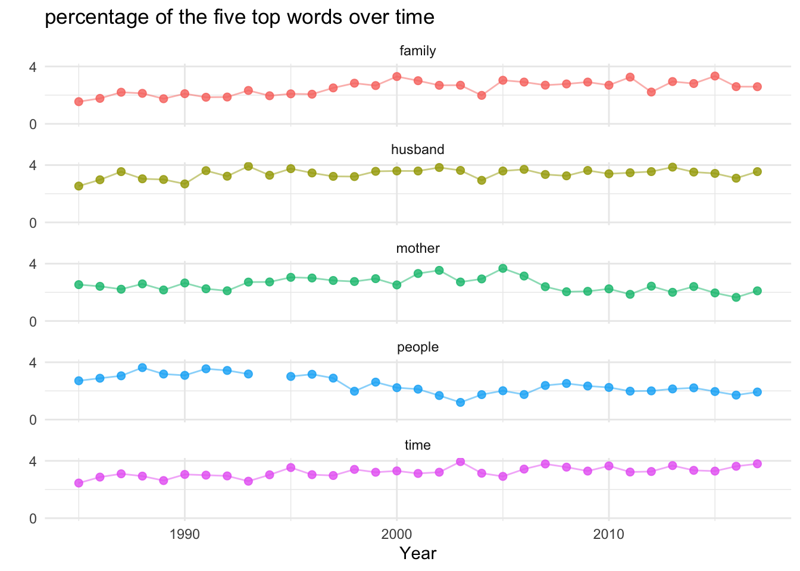